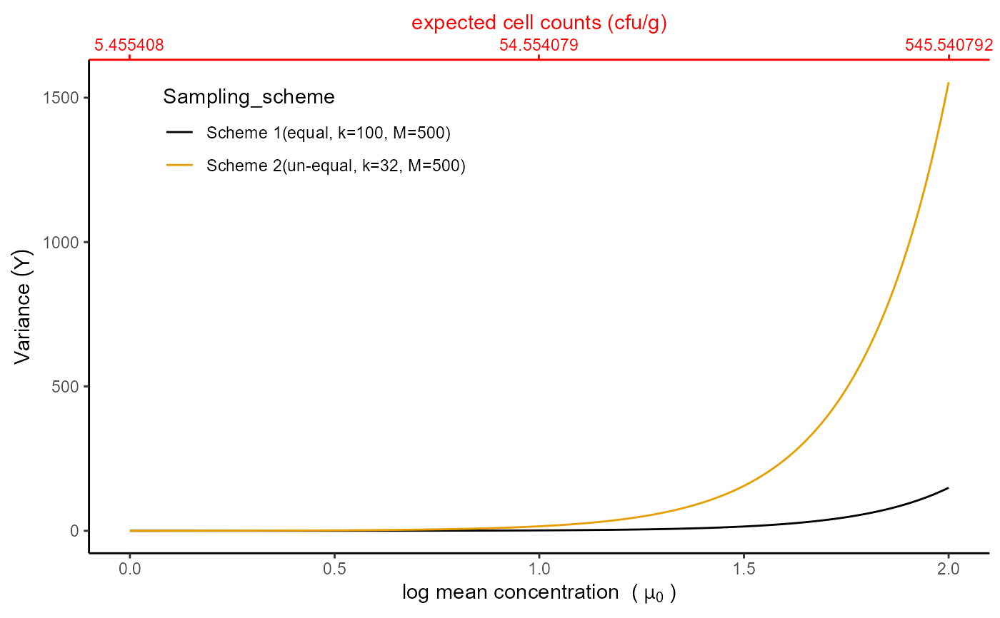

R/compare_ex_var_scenario_3.R
compare_ex_var_scenario_3.Rdcompare_ex_var_scenario_3 provides graphical displays based on expectation or variance under scenario 3 of modelling the quantity of material sampled in the risk assessment study.
compare_ex_var_scenario_3(mulow, muhigh, sd, m1, m2, K, measure)the lower value of the mean concentration (\(\mu\)) for use in the graphical display's x-axis.
the upper value of the mean concentration (\(\mu\)) for use in the graphical display's x-axis.
standard deviation on the log10 scale (default value 0.8).
the vector of the first set of incremental samples (with equal/unequal weights).
the vector of the second set of incremental samples (with equal/unequal weights).
shape parameter (default value 0.25).
what type of measure you would like to consider for the graph, such as "expectation" or "variance".
Graphical displays based on expectation or variance when lot with heterogeneous and low-level contamination.
compare_ex_var_scenario_3 provides a probability of acceptance under scenario 3 of modelling the quantity of material sampled in the risk assessment study.
Under this scenario (a lot with homogeneous contaminations), we employed Poisson gamma distribution to the model number of micro-organisms in the incremental samples. Based on the food safety literature, the expected cell count is given by \(\lambda = 10^{\mu+log(10)\sigma^2/2}\). (this section will be updated later on)
mulow <- 0
muhigh <- 2
m1 <- c(5,5,5,5,5,5,5,5,5,5,5,5,5,5,5,5,5,5,5,5,5,5,5,5,5,5,5,5,5,5,5,5,5,5,
5,5,5,5,5,5,5,5,5,5,5,5,5,5,5,5,5,5,5,5,5,5,5,5,5,5,5,5,5,5,5,5,5,5,5,5,5,5,
5,5,5,5,5,5,5,5,5,5,5,5,5,5,5,5,5,5,5,5,5,5,5,5,5,5,5,5)
m2 <- c(10,15,15,20,20,15,15,15,15,20,10,10,20,20,10,20,10,15,15,20,20,15,
15,15,15,20,10,10,20,20,10,20)
K <- 0.05
compare_ex_var_scenario_3(mulow, muhigh, sd = 0.8, m1, m2, K, measure = "variance")

compare_ex_var_scenario_3(mulow, muhigh, sd = 0.8, m1, m2, K, measure = "expectation")